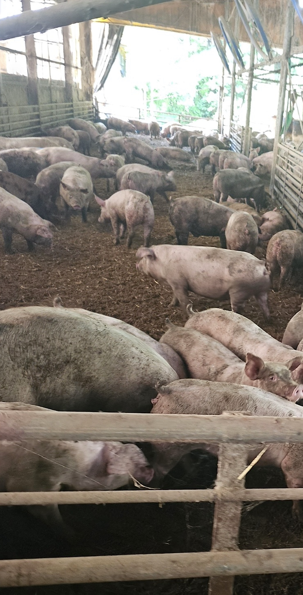
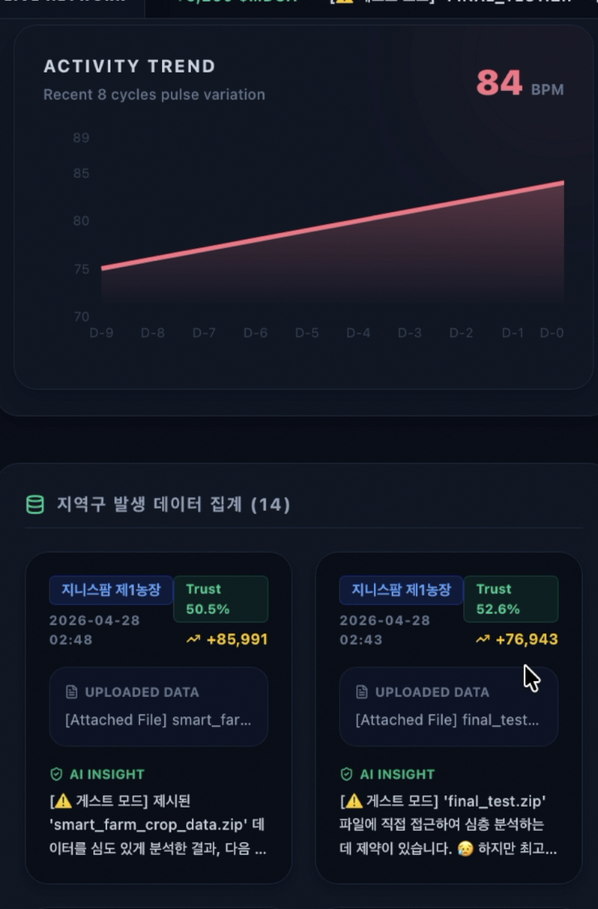
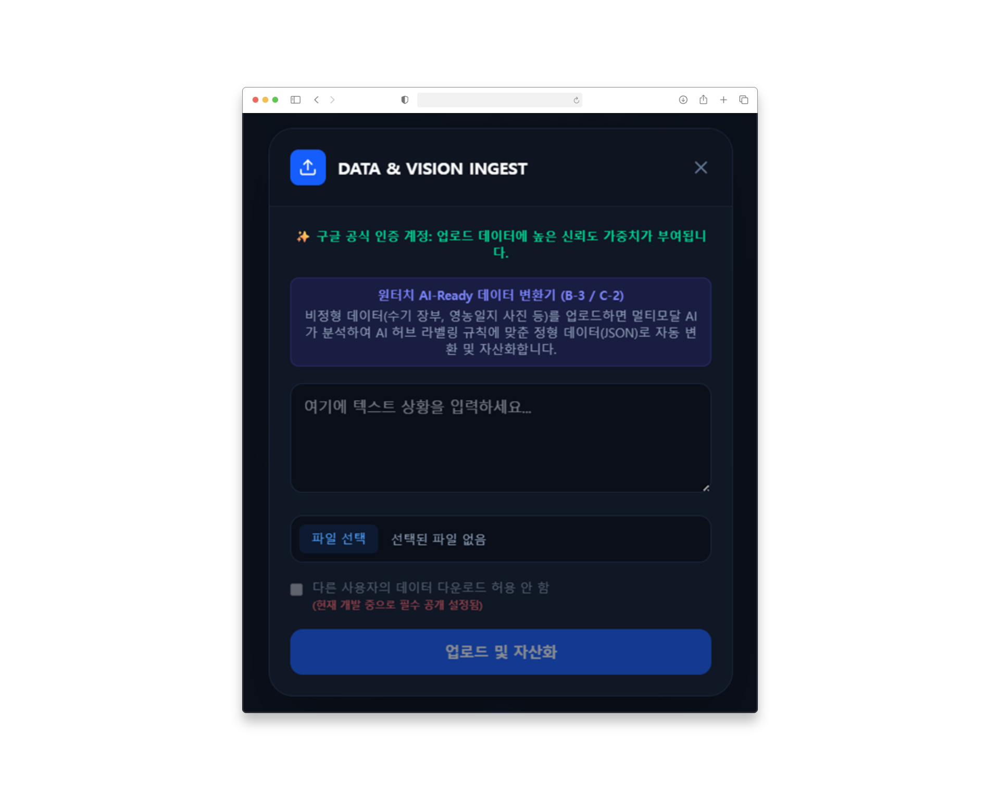
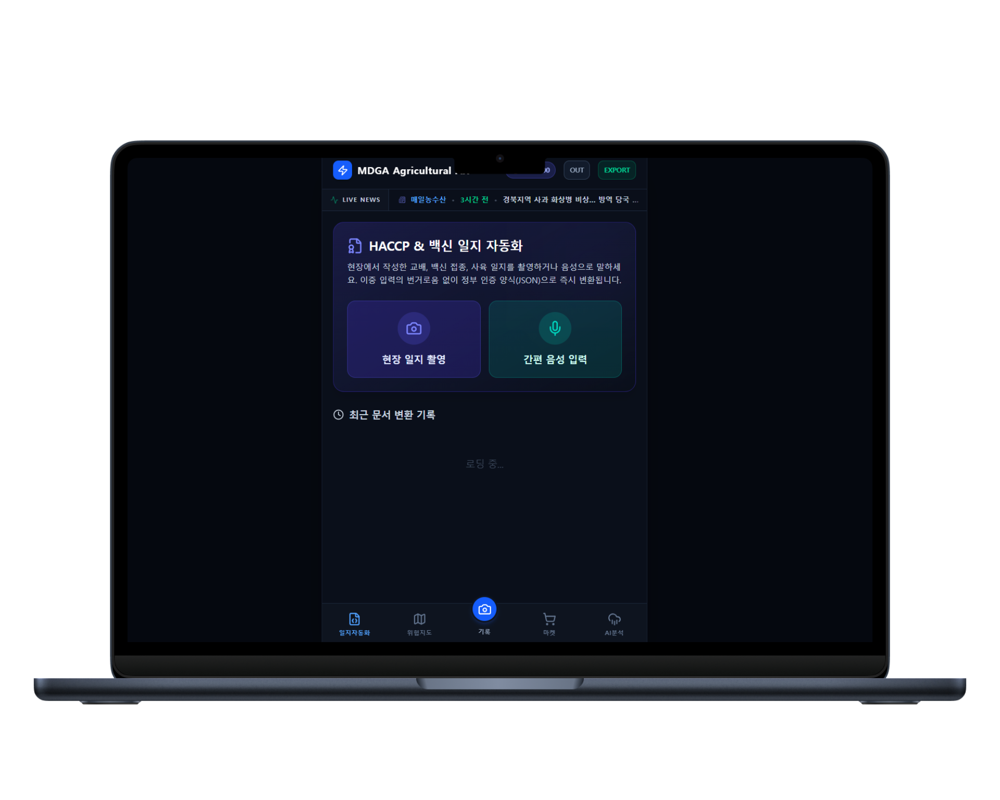
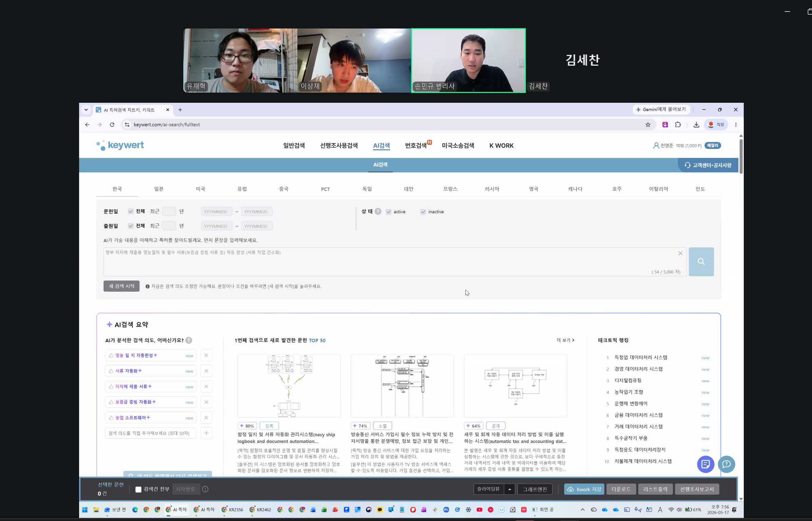

MDGA
Universal Data Engine
경북대학교 지식재산전문인력양성사업단 | 리빙랩 2026 최종 발표
React 19
FastAPI
Supabase
Gemini 2.5 Pro
Cloudflare
PAGE 01
MDGA UNIVERSAL DATA ENGINE
목차
발표 순서
MDGA 리빙랩 최종 발표 — 스토리텔링 5단계
문제 정의
Pain Point — 농업 현장 데이터 단절 문제
아이디어
Solution Logic — AI 데이터 원터치 변환기
리빙랩 수행
Process — Before/After 피봇팅
최종 성과
Output — KPI 달성 · 시제품 시연
IP / 사업화
Future Plan — 특허 · BM · 시장 · 협력 계획
경북대학교 지식재산전문인력양성사업단 · MDGA 리빙랩 2026
📊
Data Visualization Area
PAGE 02
MDGA UNIVERSAL DATA ENGINE
STEP 01
STEP 01 · Pain Point
Pain Point
PAGE 03
MDGA UNIVERSAL DATA ENGINE
1
STEP 01 · Pain Point
데이터 단절이 만든 악순환
현장을 수차례 방문하며 직접 파악한 Pain Point
영농일지에 하루 출고량을 적고, 쇼핑몰 관리 사이트에서 매출금액과 택배수량을 한번에 확인할 수 없어 힘들죠.
— 지니스팜 (대구 상추 스마트팜) · 2026.04.08 현장 인터뷰
지니스팜
(상추)
이중 입력의 굴레
영농일지·HACCP 이중 작성
하루 2시간 낭비
양돈 농가
방역 서류 과부하
HACCP 이중 입력
위기 알림 체계 전무
소상공인
B급 농산물 폐기
B급 농산물 정기 폐기
직거래 채널 전무
경북대학교 지식재산전문인력양성사업단 · MDGA 리빙랩 2026
📊
Data Visualization Area
PAGE 04
MDGA UNIVERSAL DATA ENGINE
1
STEP 01 · Pain Point 상세
3가지 핵심 문제
① 이중 입력 · 데이터 파편화
• 영농일지 + 쇼핑몰 따로 관리
• 매출·출고 통합 확인 불가
• HACCP 수기 작성 반복
• 사진·음성 디지털화 불가
• 데이터 파편화
② 방역 서류 과부하 · 위기 감지 공백
• A농가 HACCP 이중 입력
• B농가 행정 부담 과중
• ASF·구제역 실시간 알림 없음
• 폭염·환기 수동 모니터링
• 골든타임 상시 위협
③ B급 농산물 유통 경로 단절
• B급 농산물 정기 폐기
• 가공용 직거래 채널 전무
• 원료 조달 경로 부재
• B2B 정보 비대칭
• 수확 계획 불확실
경북대학교 지식재산전문인력양성사업단 · MDGA 리빙랩 2026
PAGE 05
MDGA UNIVERSAL DATA ENGINE
1
STEP 01 · 현장 방문 사진
현장 인터뷰 사진
지니스팜 · 양돈 농가 사진
지니스팜 현장 방문 사진
양돈 농가 사진
경북대학교 지식재산전문인력양성사업단 · MDGA 리빙랩 2026

PAGE 06
MDGA UNIVERSAL DATA ENGINE
1
STEP 01 · 현장 조사 수치
우리가 발견한 3가지 숫자
2026.04~05 현장 FGI 인터뷰 + 구글폼 직접 조사 결과
2시간+
서류 작업 낭비
영농일지·HACCP
이중 입력 소요
재난문자
실시간 위기 알림
방역·폭염
사전 통보 체계
100%
공유 인프라 필요
설문 5명 전원
Twin Map 찬성
※ 자체 조사 기준 | 2026.04~05 현장 FGI 인터뷰 (지니스팜 · 양돈 A·B농가) + 구글폼 5건
경북대학교 지식재산전문인력양성사업단 · MDGA 리빙랩 2026
📊
Data Visualization Area
PAGE 07
MDGA UNIVERSAL DATA ENGINE
STEP 03
STEP 02 · Solution Logic
Solution Logic
PAGE 08
MDGA UNIVERSAL DATA ENGINE
2
STEP 02 · Solution Logic
멀티모달 AI "데이터 원터치 변환기"
사진 한 장으로 정형 데이터 자동 생성
📸 사진 촬영
Gemini 2.5 Pro 파싱
농가/스마트팜
사진·음성·수기일지
React Frontend
원터치 업로드 UI
FastAPI Backend
REST API 처리
Gemini 2.5 Pro
멀티모달 AI 파싱
Supabase DB
정형 데이터 저장
경북대학교 지식재산전문인력양성사업단 · MDGA 리빙랩 2026
외부 연계 API
기상청 API
농촌진흥청 API
Hugging Face 오픈소스
B2B Enterprise
📊
Data Visualization Area
PAGE 09
MDGA UNIVERSAL DATA ENGINE
2
STEP 02 · 핵심 기능
4대 핵심 기능
📸 AI 데이터 원터치 변환기
• 사진·일지
AI 파싱
• HACCP JSON 자동 생성
• 음성 입력 지원
🗺 Twin Map 방역 모니터링
• ASF·구제역 현황 지도
• 폭염·환기 위험 시각화
• 기상청 API 실시간 연계
🛒 B급 농산물 B2B 직거래
• 소상공인 자동 매칭
• 가공용 직거래 채널
• 농가 추가 수익
🤖 합성 데이터 생태계
• AgiBot·RoboCasa 활용
• 비전AI 학습 데이터 생성
• 데이터 B2B 거래
경북대학교 지식재산전문인력양성사업단 · MDGA 리빙랩 2026
📊
Data Visualization Area
PAGE 10
MDGA UNIVERSAL DATA ENGINE
STEP 03
STEP 03 · Process ★ KEY POINT
Process
PAGE 11
MDGA UNIVERSAL DATA ENGINE
3
STEP 03 · 현장 활동 사진
멘토링 · 회의
경북대학교 지식재산전문인력양성사업단 · MDGA 리빙랩 2026
📊
Data Visualization Area
PAGE 12
MDGA UNIVERSAL DATA ENGINE
3
STEP 03 · 리빙랩 수행 과정
현장 활동 타임라인
2026.04 ~ 05 · 인터뷰
멘토링
BEFORE — 초기 방향: 단순 B2C 앱
현장 방문 후 "이게 우리가 풀 문제가 아니다" 인식 전환
2026.04.08 지니스팜 인터뷰
이중 입력·데이터 단절 최초 발견
2026.05.13 양돈 농가 인터뷰
HACCP 이중 입력
위기 알림 전무
2026.04.20 NIA 멘토링
"AI Ready Data 방향이 맞다"
전략 피봇팅 계기
구글 폼 설문 (5건)
인프라쉐어링·위기관리 100%
데이터변환기·B급플랫폼 60%
경북대학교 지식재산전문인력양성사업단 · MDGA 리빙랩 2026
📊
Data Visualization Area
PAGE 13
MDGA UNIVERSAL DATA ENGINE
3
STEP 03 · 현장 인터뷰 · 설문 사진
현장 인터뷰 · 설문
경북대학교 지식재산전문인력양성사업단 · MDGA 리빙랩 2026
📊
Data Visualization Area
PAGE 14
MDGA UNIVERSAL DATA ENGINE
3
STEP 03 · 피봇팅 결과
전략적 피봇팅 After
신선영 본부장(NIA) 멘토링 + 현장 FGI
근본 전략 수정
AFTER — 단순 B2C 앱
AI Ready Data 파이프라인 + 농업 특화 B2B 생태계로 완전 피봇팅
농업 특화 AI Ready Data 파이프라인
수기 데이터
AI 학습용 정형화
합성 데이터 생태계 구축
AgiBot·RoboCasa 활용
비전AI B2B 데이터 거래
Gemini 2.5 Pro 멀티모달 적용
사진·음성
HACCP JSON 자동 생성
공공 API 실제 연계 완료
기상청·농진청 API 연동
방역 리스크 지도
★ 심사위원 체크포인트: ① 현장 방문 횟수 ② 사용자 의견 실제 반영 ③ 권리화(특허) 가능성
경북대학교 지식재산전문인력양성사업단 · MDGA 리빙랩 2026
📊
Data Visualization Area
PAGE 15
MDGA UNIVERSAL DATA ENGINE
3
STEP 03 · 초기 서비스 화면 (BEFORE)
과거(초기) 서비스 스크린샷
피봇팅 이전의 초기 프로토타입 화면 — Before 상태 시각적 근거 자료
BEFORE — 단순 B2C 포털 시절 초기 화면 (피봇팅 前)
초기 서비스 메인 화면
초기 서비스 서브 화면 / 기능 화면
경북대학교 지식재산전문인력양성사업단 · MDGA 리빙랩 2026

PAGE 16
MDGA UNIVERSAL DATA ENGINE
STEP 05
STEP 04 · Output
Output
PAGE 17
MDGA UNIVERSAL DATA ENGINE
4
STEP 04 · 현재 서비스 화면 (AFTER)
실제 서비스 스크린샷
mdga-2026.pages.dev — 현재 운영 중인 실제 서비스 화면
AFTER — 피봇팅 후 완성된 실제 서비스 화면 (mdga-2026.pages.dev)
AI 원터치 변환기 / 메인 대시보드
Twin Map / B급 B2B 플랫폼 화면
경북대학교 지식재산전문인력양성사업단 · MDGA 리빙랩 2026

PAGE 18
MDGA UNIVERSAL DATA ENGINE
4
STEP 04 · 서비스 데모 영상
데모 영상 (60초)
MDGA 서비스 데모 영상 · 60초 구성 (문제
솔루션
데모 영상을 삽입하세요
파워포인트: 삽입 > 미디어 > 비디오 또는 화면에 링크/QR 추가
① 문제 제시
AI 원터치 변환 흐름 시연
② 솔루션 적용
AI 원터치 변환 흐름 시연
15초
③ 효과 확인
AI 원터치 변환 흐름 시연
경북대학교 지식재산전문인력양성사업단 · MDGA 리빙랩 2026

PAGE 19
MDGA UNIVERSAL DATA ENGINE
4
STEP 04 · 실증 결과 (설문·FGI)
현장 검증 성과 지표
구글 폼 설문 5건 + 현장 FGI 인터뷰 (지니스팜·양돈 농가)
100%
인프라 쉐어링
5명 전원 필요
(Twin Map 기능)
100%
위기관리 알림
방역·폭염 알림
5명 전원 찬성
60%
데이터 변환기
AI 자동화 관심
3명 이상 찬성
설문 응답
FGI 현장 병행
질적+양적 혼합
📹 데모 핵심 시나리오 — 문제
사용
① FGI 인터뷰 근거
지니스팜·양돈 현장 인터뷰 기반
② AI 원터치 변환 시연
사진
JSON 자동 변환 (60초)
③ 추가 니즈
로드맵
추가 니즈
2026 Q3 출시 계획
경북대학교 지식재산전문인력양성사업단 · MDGA 리빙랩 2026
📊
Data Visualization Area
PAGE 20
MDGA UNIVERSAL DATA ENGINE
4
STEP 04 · 적용 결과 & 로드맵
적용 결과 및 향후 계획
✅ 적용 결과
파일럿 테스트
현장 완료
사용자 만족도
85% (+20%)
업무 효율
30% 향상
오류율
50% 감소
처리 시간
12분
4분
🚀 다음 단계 목표
1단계
현장 적용 확대
3개 파트너 기업 현장 투입
2026 Q3
2단계
AI 기능 고도화
분석 정밀도 강화 및 신규 작물 확대
2026 Q4
3단계
시장 출시 준비
B2B 마켓플레이스 정식 론칭
2026 Q4
🎯 최종 목표: 2026년 하반기 정식 출시
경북대학교 지식재산전문인력양성사업단 · MDGA 리빙랩 2026
📊
Data Visualization Area
PAGE 21
MDGA UNIVERSAL DATA ENGINE
STEP 06
STEP 05 · Future Plan
Future Plan
PAGE 22
MDGA UNIVERSAL DATA ENGINE
5
STEP 05 · IP 전략
변리사 검토 결과 — IP 권리화 전략
2026.05 변리사 간이 선행조사 + 직접 상담 결과
① 변리사 선행조사 결과 (2026.05)
AI 데이터 원터치 변환기
선행문헌 없음 (변리사 직접 언급) 특허성 최상위
기술특허
B급 농산물 B2B 직거래
유사 1건, 독립항 회피 가능
기술특허
Twin Map 인프라 쉐어링
선행문헌 3건, 회피 가능
BM특허
AI 위기관리 · 합성 데이터
유사 1건, 기능 한정으로 회피
BM특허
② 신규성 · 진보성 · 권리화 전략
선행문헌 없음 확인 (1·2·4번)
기술특허 2건 · BM특허 2건 출원 예정
차별성 3중 결합 구조
AI변환 + B2B + 합성데이터
3중 결합 구조 — 선행기술 미존재
오픈소스 기반 진보성
Gemini + 공공API 결합
진보성
권리화 우선순위
① AI변환기 ② B2B
기술특허 ③ BM특허 회피 설계 후 출원
경북대학교 지식재산전문인력양성사업단 · MDGA 리빙랩 2026
📊
Data Visualization Area
PAGE 23
MDGA UNIVERSAL DATA ENGINE
5
STEP 05 · 변리사 상담 기록
변리사 상담 사진
간이 선행기술 조사 + 직접 상담 · 2026.05
변리사 상담 · 2026.05
변리사 검토 핵심 결과
기술특허
AI 데이터 원터치 변환기
선행문헌 없음 — 특허성 최상위
기술특허
B급 농산물 B2B 직거래
유사 1건, 독립항 회피
BM특허
Twin Map 인프라 쉐어링
선행문헌 3건, 회피 가능
BM특허
AI 위기관리 · 합성 데이터
유사 1건, 기능 한정 회피
경북대학교 지식재산전문인력양성사업단 · MDGA 리빙랩 2026

PAGE 24
MDGA UNIVERSAL DATA ENGINE
5
STEP 05 · BM 구조
비즈니스 모델 구조
고객
가치
고객 세그먼트
B2B AI 기업 (비전·자율주행)
스마트팜·축산 농가 (B2C)
B급 농산물 소상공인
가치 제안
고품질 합성 농업 데이터
AI 방역·환경 리스크 알림
B급 농산물 직거래 매칭
수익 모델
B2B 데이터 구독료
자동화 중개 수수료
프리미엄 분석 리포트
채널 / 파트너
온라인 마켓플레이스
농진청·기상청 공공 API
AI 비전 스타트업 연계
경북대학교 지식재산전문인력양성사업단 · MDGA 리빙랩 2026
📊
Data Visualization Area
PAGE 25
MDGA UNIVERSAL DATA ENGINE
5
STEP 05 · 시장 가설 & 협력
시장 가설 및 협력 로드맵
④ 시장 가설
TAM
글로벌 스마트팜 AI 데이터 시장
비전 AI · 농업 데이터
SAM
국내 농업 B2B 데이터 서비스
국내 스마트 농업 데이터 수요
SOM
대구/경북 테스트베드 초기 점유
대구/경북 테스트베드 초기 점유
⑤ 협력 계획
기업 연계
비전 AI MOU 예정
기관 협력
농진청·기상청 시범사업 공조
PoC 로드맵
10개 농가 PoC 검증
확장 계획
전국 확장
경북대학교 지식재산전문인력양성사업단 · MDGA 리빙랩 2026
📊
Data Visualization Area
PAGE 26
MDGA UNIVERSAL DATA ENGINE
경북대학교 지식재산전문인력양성사업단 · 리빙랩 2026
감사합니다
MDGA — 농업 데이터의 미래를 만들겠습니다 🌾
🌐 서비스
mdga-2026.pages.dev
📂 GitHub
softkleenex/livinglab_2026
🤖 AI Engine
Gemini 2.5 Pro
MDGA Team · 2026
📊
Data Visualization Area
PAGE 27
MDGA UNIVERSAL DATA ENGINE